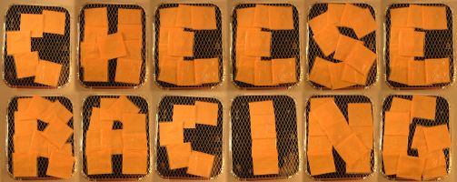

Welcome to the world of


What is it?
What do you think happens when you throw a slice of processed cheese (without removing the plastic wrapping) onto a lit barbeque?
The plastic melts giving off highly toxic fumes and you are left with a pretty grim cheese/plastic mess welded on to your BBQ, right?
Wrong!
Unbelievably what actually happens, as discovered by the pioneers and inventors of the sport way back in 1997, is that the plastic pouch does not melt - even when the cheese inside eventually boils!
Even more incredibly, as the cheese melts and the strange chemicals found in processed cheese turn to gas - the plastic pouch inflates until eventually all four corners lift off the BBQ and the pouch is fully inflated!
Now under this pressure you might think that the pouch would eventually burst - but no - most of the time the seal remains intact!

Quite why processed cheese manufacturers choose to use such industrial strength, heat proof plastic to encase their products is something of a mystery - as is why NASA don't use this material instead of those expensive heat proof tiles on the space shuttle?
Such important questions no doubt occurred to the first observers of this phenomenon on that night in Osmington, but that didn't stop them from coming up with a brilliantly simple sport based on it.
The game
- Each player throws a slice of cheese onto the BBQ.
- The player whose cheese fully inflates first wins!
Read the full CRASS rules.